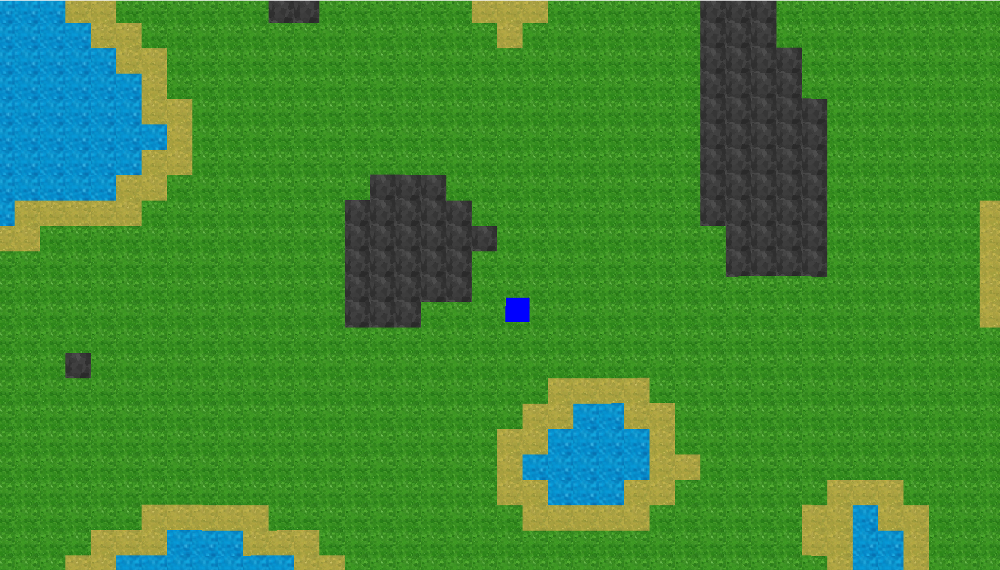

Project for a Science Expo in 2023, partnered with a great friend of mine Mathew Teem, we had a project where we wrote a program to gather data on different sorting algorithms. Our goal of this project was to find out what Sorting algorithm was best for what scenario when sorting large integer lists. To do this we created 4 different types of lists of a size of 100,000 items.
We then wrote sorting algorithm functions that would take in an integer lists, convert it to an array and, sort the array. The sorting algorithms we used for this project were:
We then would time how long it took to sort the array by using high_resolution_clock from the C++ standard library and input the time in milliseconds into tables. We ran the test 3 times for each algorithm in each scenario and got the averages.
I wanted to learn how games randomly generate Terrain, such as Minecraft's terrain generation for an example. I then found Noise algorithms such as perlin and simplex. Although Graphic Design and Art isn't my specialty, I decided to create a Java Frame, add a player and a camera and apply movement and went on to learn how terrain is generated with noise.
